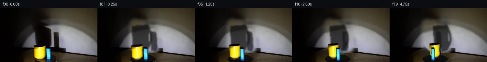
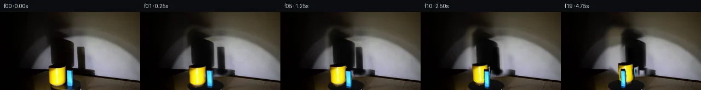
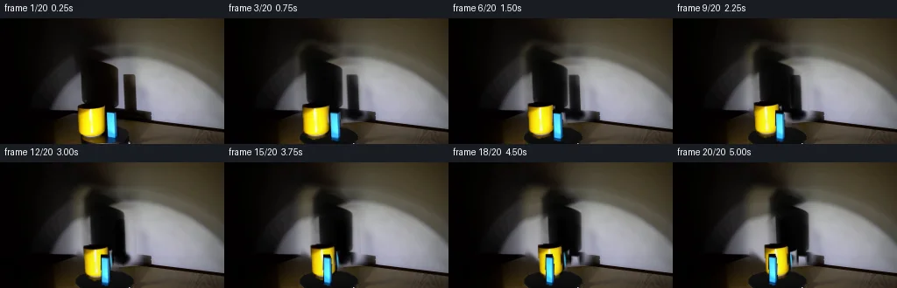
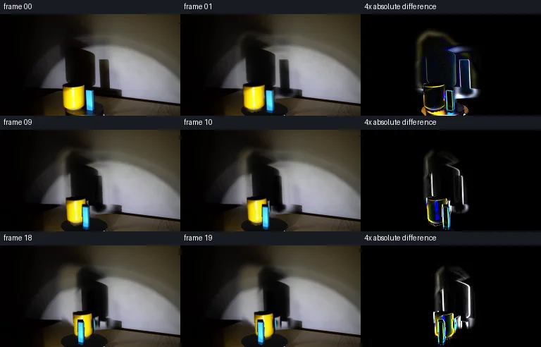

V0 · 初版
2026-11-05T00:59:31.990892+00:00 · RGB b5898b130868
![]()
Observable Generation Trace
把最终像素视频、Harness 冻结的每轮候选、真实工具事件和 Agent 自述放在同一页。可观测证据与模型自述分开标记，避免把“模型说它检查过”误当成真实工具调用。
![首帧]()
Static locked-off single-shot with fixed frame throughout filmed with constant framerate in real-time. The scene shows a realistic scientific demonstration. The scene only contains the described setup and actions. The yellow mug and the blue rectangular block sit on the black, clockwise-rotating platform, and the spotlight points toward the yellow mug and the block. The yellow mug and the blue rectangular block are rotating clockwise around the center of the black rotating platform, while the spotlight casts a large shadow on the wall behind it.
首帧显示在左侧播放器初始画面。Track 权限、隔离和 tensor 一致性来自 run manifest，而不是 METHOD.md。
默认勾选初版和最终版；可选其他版本一起同步播放。仅检查图更新的连续重复快照已合并，回退旧视频仍保留为一次修订。
Observable events
来源：events.jsonl + run manifest
视觉工具可用，但 events.jsonl 没有记录到成功的输出 PNG 读取；存在 self-refine 候选，不等于存在可验证的视觉 self-refine。
Frozen candidates
每张图来自该 round 的真实 00 / 01 / 05 / 10 / 19 帧

pixels 18b4a91b60cc6c9e · code 4a18c81c681f0877
--- previous/generate.py
+++ current/generate.py
@@ -0,0 +1,242 @@
+from pathlib import Path
+import math
+
+import cv2
+import numpy as np
+from PIL import Image, ImageDraw, ImageFont
+
+from artifact_io import save
+
+
+ROOT = Path(__file__).resolve().parent
+H, W = 144, 256
+
+
+def soft_polygon(points, blur=3.0):
+ """Return an antialiased/feathered full-frame polygon mask."""
+ m = np.zeros((H, W), np.uint8)
+ cv2.fillPoly(m, [np.asarray(points, np.int32)], 255)
+ if blur:
+ m = cv2.GaussianBlur(m, (0, 0), blur)
+ return m.astype(np.float32) / 255.0
+
+
+def make_clean_plate(src):
+ """Remove the starting wall shadow and foreground props from the photo."""
+ srcf = src.astype(np.float32)
+ plate = srcf.copy()
+
+ # The right side of the spotlight is unobstructed. Re-sample it into the
+ # shadow footprint, following the spotlight's horizontal brightness falloff.
+ yy, xx = np.mgrid[0:H, 0:W]
+ sample_x = np.clip((220.0 - 0.48 * (xx - 89.0)).round().astype(int), 169, 225)
+ borrowed = srcf[yy, sample_x]
+ wall_shadow = soft_polygon(
+ [(84, 36), (95, 27), (121, 33), (139, 48), (158, 57),
+ (161, 112), (145, 119), (105, 116), (84, 102)], 4.5
+ )
+ wall_shadow *= (yy < 120)
+ plate = plate * (1.0 - wall_shadow[..., None]) + borrowed * wall_shadow[..., None]
+
+ # Inpaint the photographed mug and block. This is later covered at the
+ # bottom by a reconstructed turntable top, but it also repairs the wall seam.
+ prop_mask = np.zeros((H, W), np.uint8)
+ cv2.fillPoly(prop_mask, [np.array([(87, 96), (121, 95), (124, 103),
+ (135, 102), (136, 141), (87, 141)], np.int32)], 255)
+ repaired = cv2.inpaint(np.clip(plate, 0, 255).astype(np.uint8), prop_mask, 5, cv2.INPAINT_TELEA)
+ plate = repaired.astype(np.float32)
+
+ # Rebuild the shallow black platform where the inpainting crossed it.
+ platform = np.zeros((H, W), np.float32)
+ cv2.ellipse(platform, (119, 136), (33, 12), 0, 0, 360, 1.0, -1, cv2.LINE_AA)
+ py = np.clip((yy - 124) / 20.0, 0, 1)
+ top_rgb = np.dstack((18 - 8 * py, 19 - 8 * py, 18 - 7 * py))
+ edge = np.zeros((H, W), np.float32)
+ cv2.ellipse(edge, (119, 136), (33, 12), 0, 2, 178, 1.0, 1, cv2.LINE_AA)
+ edge = cv2.GaussianBlur(edge, (0, 0), 0.55)
+ # Preserve part of the original rim texture while enforcing a clean prop-free top.
+ plate = plate * (1 - platform[..., None]) + top_rgb * platform[..., None]
+ plate += edge[..., None] * np.array([15.0, 16.0, 14.0], np.float32)
+ return np.clip(plate, 0, 255)
+
+
+def prop_layers(src):
+ """Extract premultiplied photographic layers for the mug and block."""
+ mug = np.zeros((H, W), np.uint8)
+ # Main body, top lip, and the visible handle ring.
+ cv2.fillPoly(mug, [np.array([(89, 99), (116, 97), (119, 102),
+ (119, 130), (115, 136), (101, 139),
+ (93, 136), (90, 130)], np.int32)], 255)
+ cv2.ellipse(mug, (116, 117), (7, 14), 0, 0, 360, 255, -1, cv2.LINE_AA)
+ cv2.ellipse(mug, (116, 117), (3, 9), 0, 0, 360, 0, -1, cv2.LINE_AA)
+ # Keep the handle hole only where it is genuinely outside the mug body.
+ cv2.fillPoly(mug, [np.array([(90, 103), (116, 100), (118, 130),
+ (114, 136), (99, 138), (91, 133)], np.int32)], 255)
+ mug = cv2.GaussianBlur(mug, (0, 0), 0.48).astype(np.float32) / 255.0
+
+ block = np.zeros((H, W), np.uint8)
+ cv2.fillPoly(block, [np.array([(121, 104), (130, 104), (132, 108),
+ (134, 134), (131, 139), (122, 138)], np.int32)], 255)
+ block = cv2.GaussianBlur(block, (0, 0), 0.42).astype(np.float32) / 255.0
+
+ rgb = src.astype(np.float32)
+ return {
+ "mug": (rgb * mug[..., None], mug),
+ "block": (rgb * block[..., None], block),
+ }
+
… diff truncated; 155 more lines …
pixels bacd686ebf7f66b6 · code 3d5b9cb2d9f29c5c
--- previous/generate.py
+++ current/generate.py
@@ -86,6 +86,31 @@
}
+def measured_shadow_layers(src, plate):
+ """Recover neutral-density shadow attenuation from the supplied photo."""
+ # The shadow is essentially neutral, so luminance ratios retain its soft,
+ # photographed core and penumbra without baking wall color into the layer.
+ weights = np.array([0.2126, 0.7152, 0.0722], np.float32)
+ src_l = np.sum(src.astype(np.float32) * weights, axis=2)
+ plate_l = np.sum(plate * weights, axis=2)
+ attenuation = np.clip(1.0 - (src_l + 2.0) / (plate_l + 2.0), 0.0, 0.975)
+
+ mug_region = soft_polygon(
+ [(83, 39), (94, 28), (118, 31), (138, 47), (144, 111),
+ (134, 117), (93, 112), (82, 96)], 2.3
+ )
+ block_region = soft_polygon(
+ [(130, 53), (139, 54), (157, 61), (161, 112),
+ (151, 117), (132, 112)], 2.0
+ )
+ # A soft split prevents a seam where the photographed shadows overlap.
+ x = np.arange(W, dtype=np.float32)[None, :]
+ left_weight = 1.0 / (1.0 + np.exp((x - 137.0) / 2.0))
+ mug = attenuation * mug_region * left_weight
+ block = attenuation * block_region * (1.0 - left_weight)
+ return {"mug": mug.astype(np.float32), "block": block.astype(np.float32)}
+
+
def affine_layer(premul, alpha, matrix, light=1.0):
rgb = cv2.warpAffine(premul, matrix, (W, H), flags=cv2.INTER_LINEAR,
borderMode=cv2.BORDER_CONSTANT, borderValue=0)
@@ -118,7 +143,7 @@
def project_shadow(alpha, anchor, kind):
- """Project an already positioned object silhouette upward onto the wall."""
+ """Fallback analytic projection of an object silhouette onto the wall."""
ax, ay = anchor
if kind == "mug":
xs, ys, opacity = 1.55, 1.75, 0.78
@@ -136,6 +161,27 @@
return np.clip(opacity * (0.76 * core + 0.24 * penumbra), 0, 0.86)
+def move_measured_shadow(alpha, anchor, kind, theta):
+ """Move the measured initial shadow under the same light projection."""
+ ax, ay = anchor
+ if kind == "mug":
+ old_ax, width_scale = 104.0, 1.0 - 0.11 * math.sin(theta)
+ else:
+ old_ax, width_scale = 127.0, 1.0 - 0.19 * math.sin(theta)
+ old_shadow_ax = 1.5 * old_ax - 42.0
+ new_shadow_ax = 1.5 * ax - 42.0
+ new_wall_base = 112.0 + 0.08 * (ay - 136.0)
+ height_scale = 1.0 - 0.02 * math.sin(theta)
+ matrix = np.array(
+ [[width_scale, 0, new_shadow_ax - width_scale * old_shadow_ax],
+ [0, height_scale, new_wall_base - height_scale * 112.0]], np.float32
+ )
+ moved = cv2.warpAffine(alpha, matrix, (W, H), flags=cv2.INTER_LINEAR,
+ borderMode=cv2.BORDER_CONSTANT, borderValue=0)
+ moved[119:, :] = 0
+ return np.clip(cv2.GaussianBlur(moved, (0, 0), 0.35), 0, 0.98)
+
+
def motion_state(theta, layers):
# Perspective-compressed circular paths on the horizontal platform plane.
mu, mv = orbit(-15.0, 0.0, theta)
@@ -162,16 +208,16 @@
}
-def render_frame(plate, layers, theta):
+def render_frame(plate, layers, shadow_layers, theta):
state = motion_state(theta, layers)
frame = plate.copy()
# Fixed spotlight, moving causal shadow. Shadows multiply the clean plate so
# wall grain and spotlight brightness remain visible through the penumbra.
- sm = project_shadow(state["mug"][1], state["mug"][2], "mug")
- sb = project_shadow(state["block"][1], state["block"][2], "block")
+ sm = move_measured_shadow(shadow_layers["mug"], state["mug"][2], "mug", theta)
+ sb = move_measured_shadow(shadow_layers["block"], state["block"][2], "block", theta)
combined = 1.0 - (1.0 - sm) * (1.0 - sb)
- frame *= (1.0 - 0.88 * combined[..., None])
+ frame *= (1.0 - combined[..., None])
… diff truncated; 16 more lines …Final visual checks
Harness 保存的最终产物


Agent claims
以下文字由生成 Agent 撰写，不等同于工具证据
| Frame | Time | Platform angle | Planned event |
|---|---|---|---|
| 00 | 0.00 s | 0.0 deg | Exact supplied first frame; mug left/front, block right/front, original large shadow. |
| 01 | 0.25 s | 4.7 deg | First small clockwise displacement; silhouettes begin shifting. |
| 02 | 0.50 s | 9.5 deg | Mug drifts slightly right/back; block starts moving toward the foreground arc. |
| 03 | 0.75 s | 14.2 deg | Mug handle and body yaw subtly; block right face changes width. |
| 04 | 1.00 s | 18.9 deg | Platform highlight rotates; wall silhouettes remain large and soft-edged. |
| 05 | 1.25 s | 23.7 deg | Mug approaches the rear half of its orbit; block advances toward center-front. |
| 06 | 1.50 s | 28.4 deg | Shadow gap between mug and block changes continuously. |
| 07 | 1.75 s | 33.2 deg | Mug shifts nearer image center; block trends left/down. |
| 08 | 2.00 s | 37.9 deg | Object overlap begins to increase in perspective. |
| 09 | 2.25 s | 42.6 deg | Mid-rotation; block is visibly nearer the foreground than the mug. |
| 10 | 2.50 s | 47.4 deg | Mug silhouette narrows slightly with yaw; projected handle lobe relocates. |
| 11 | 2.75 s | 52.1 deg | Block passes toward the front-center arc; mug continues behind it. |
| 12 | 3.00 s | 56.8 deg | Depth ordering is clear: rear mug is composited before front block. |
| 13 | 3.25 s | 61.6 deg | Mug contact point moves rightward; block contact point moves leftward. |
| 14 | 3.50 s | 66.3 deg | Shadows sweep rightward/upward in response to the orbit. |
| 15 | 3.75 s | 71.1 deg | Mug and block approach their quarter-turn positions. |
| 16 | 4.00 s | 75.8 deg | Mug appears more centered and slightly farther back; block is front-center. |
| 17 | 4.25 s | 80.5 deg | Final approach remains constant-speed, with no easing. |
| 18 | 4.50 s | 85.3 deg | Near-quarter-turn; shadow placement nearly reaches final configuration. |
| 19 | 4.75 s | 90.0 deg | Quarter-turn complete; mug is near back/right of center, block near front/center-left. |
This sequence is generated locally and deterministically from first_frame.png; no external images, models, masks, engines, or references are used.
The implementation in generate.py uses photographic sprite compositing and analytic 2D physics/perspective:
artifact_io.save writes the PNG sequence, packed uint32 tensor, inspection sheet, and standalone player. The generator then creates an adjacent-frame diagnostic and verifies every PNG and every packed 0xRRGGBB value against the in-memory frame tensor.Run with:
python generate.py